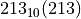
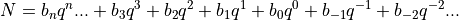
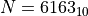
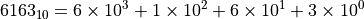
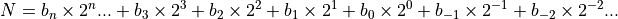
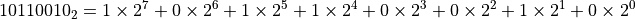
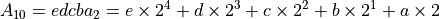
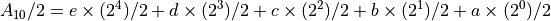
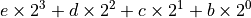

十进制与二进制转换
参考文档 Binary to Decimal Conversion<https://www.electronics-tutorials.ws/binary/bin_2.html>
在生活中我们最常用的数字系统就是十进制计数系统。所谓十进制计数系统，就是以10为基数的编号系统，对于十进制数其中每个数字为位采用十个可能值之一，称为“数字”，从0到9。例如， 就是一个十进制数。
而在计算机系统中，使用的是二进制编号系统，换言之，其每个数字位只有两个可能值0或1。这十分契合计算机系统中使用逻辑电平来传递信号的方式，对于一个电信号来说，其一般有两个状态，即低位或高位对应着“0”或“1”（也可能出现高电平对应”0“的情况）。
对于任何表示数字的编号系统都可以概括为一下关系：

其中N是被表示的实数，$b_i$ 是数字，q是基值。
例如对于十进制系统中的数字 

二进制系统的通用表示则是

下面将介绍如何在我们常用的十进制与计算机系统常用的二进制进行进制转换。
二进制转十进制
二进制转十进制的方法十分简单，只需根据编号系统的定义直接取二进制数字各个数位的加和即可。例如对于二进制数 ，其可以表示为

将右侧数字按照常规十进制系统加和即可得到二进制数的十进制表示，即 。
十进制转二进制
十进制整数转换为二进制整数十进制整数转换为二进制整数采用”除2取余，逆序排列”法。具体做法是：用2整除十进制整数，可以得到一个商和余数；再用2去除商，又会得到一个商和余数，如此进行，直到商为小于1时为止，然后把先得到的余数作为二进制数的低位有效位，后得到的余数作为二进制数的高位有效位，依次排列起来。
例如对于十进制数 的转换，我们可以用以下方法得到其二进制表达式。
178 |
remainder |
|
|---|---|---|
divided by 2 |
89 |
0 |
divided by 2 |
44 |
1 |
divided by 2 |
22 |
0 |
divided by 2 |
11 |
0 |
divided by 2 |
5 |
1 |
divided by 2 |
2 |
1 |
divided by 2 |
1 |
0 |
divided by 2 |
0 |
1 |
将余数从最后往前看，得到 ，即 ，这与前得到的结果相同。
原理
这样做之所以可行，就是基于前述编号系统的表示方法。为了说明其原理，我们重新选择一个十进制整数 ，假设其化得的二进制数位 的形式，我们将其按二进制编号系统写出来就可以清晰明白此方法的原理。对于整数 ，根据假设我们知道

将 除以基数2，得到

因为对于各个数位e、b、c、b、a均为0或1，因此只有最后一项a不能整除2，也就是说，a就是第一次整除余下的数。第一次整除后得到的商是

在此基础上再除以基数2，同理余下了b，以此类推，即可得到此十进制数 的二进制表达。